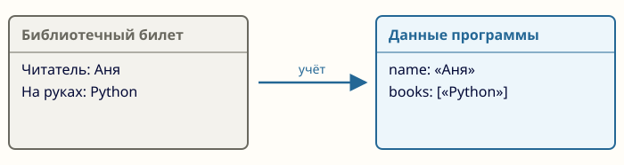
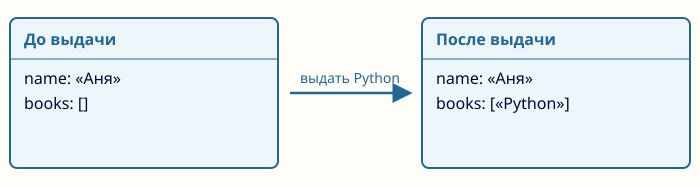
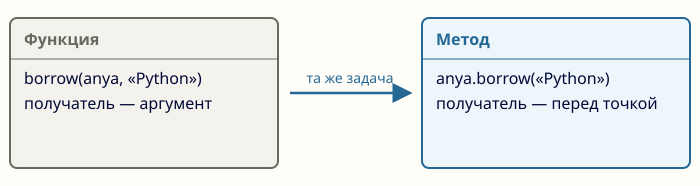
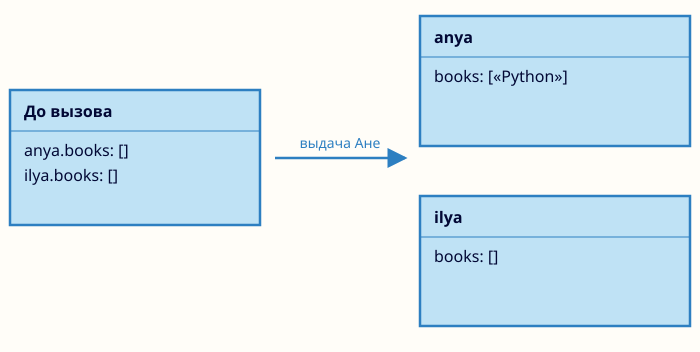

Глава 8.1
Введение. Парадигма ООП
От записи в библиотечном билете к работающему объекту. В этой главе один пример показывает, зачем объединять сведения о читателе с операцией выдачи книги.
- Перед началом
- Функции, словари и списки
- После главы
- Объяснить связь между данными читателя, классом и вызовом метода.
- Среда
- Python 3.11 и новее · самостоятельные примеры
- Основа
- Модуль 8 исходного справочника · с. 541
§1Что программа хранит о читателе
В библиотечном билете записаны имя читателя и выданные книги. После выдачи книги в билете появляется её название. Чтобы вести такой учёт в программе, нужно сохранить те же сведения и описать их изменение.
На рисунке слева показана запись в билете, справа — выбранные данные программы. Мы учитываем имя и названия книг. Адрес библиотеки и цвет обложки для этой операции не нужны.

Поле name хранит имя. Поле books хранит список выданных книг. Здесь название книги — строка: отдельную модель самой книги пока не создаём.
Эти сведения можно записать знакомым словарём. Начнём с пустого списка: у Ани ещё нет выданных книг.
anya = {"name": "Аня", "books": []}
print(anya["name"])
print(anya["books"])Аня []
Ключи "name" и "books" выбирают соответствующие значения словаря. Пустые квадратные скобки в выводе означают пустой список. Данные уже представлены в программе; теперь опишем действие, которое их меняет.
§2Как выдача меняет эти данные
После выдачи книги имя читателя остаётся прежним. В список его книг добавляется название. Так возникает связь между хранимыми данными и действием над ними.
Следующие два кадра показывают сведения об одной и той же Ане до и после выдачи.

Значения данных в определённый момент называют состоянием. В этом примере изменяется часть состояния — список книг. Действие выдачи оформим функцией borrow. Английское borrow означает «взять на время».
def borrow(reader, title):
reader["books"].append(title)
anya = {"name": "Аня", "books": []}
borrow(anya, "Python")
print(anya["name"])
print(anya["books"])Аня ['Python']
Первый аргумент anya передаётся в параметр reader. Второй аргумент "Python" передаётся в title. Выражение reader["books"] выбирает список, а append(title) добавляет в него название.
Функция меняет переданный словарь. Возвращаемое значение для этой операции не используется. Операции, доступные для некоторой сущности, называют её поведением. Выдача — одна из операций нашей модели читателя.
По-простому: запись в нужный билет
При выдаче выбирают билет читателя, затем добавляют запись о книге. В программе тот же выбор выражен первым аргументом функции.
В этой аналогии показана только запись о выданной книге. Остальные действия библиотечной выдачи в примере не моделируются.
Функция и данные уже связаны смыслом задачи. В объектном подходе эта связь отражается и в устройстве кода.
§3Как ту же операцию записать через объект
Для нескольких читателей нужно повторять одну структуру: имя, список книг и операция выдачи. Класс позволяет описать эту структуру и операции в одном месте. Экземпляр класса представляет конкретного читателя.
Ниже класс называется Reader — «читатель». Сначала сравним форму вызова уже знакомой выдачи с формой вызова метода.

В записи anya.borrow("Python") перед точкой указан объект, для которого выполняется операция. Его называют получателем. Операция borrow, определённая в классе, называется методом.
Для чтения вызова достаточно различать класс Reader, экземпляр anya и метод borrow. Сначала создаём читателя, затем вызываем выдачу. Подробное устройство класса вынесено в раскрываемый блок: его можно открыть, чтобы запустить всю программу.
anya = Reader("Аня")
anya.borrow("Python")Полная программа для запуска и устройство класса
class Reader:
def __init__(self, name):
self.name = name
self.books = []
def borrow(self, title):
self.books.append(title)
anya = Reader("Аня")
anya.borrow("Python")
print(anya.name)
print(anya.books)Аня ['Python']
Вызов Reader("Аня") создаёт экземпляр читателя. Инициализатор сохраняет строку в self.name и создаёт пустой список self.books. Имя anya связывается с этим экземпляром.
При вызове anya.borrow("Python") параметр self ссылается на anya, а title получает строку "Python". Поэтому строка self.books.append(title) добавляет книгу в список Ани. Вывод совпадает с вариантом на словаре.
Данные, доступные через точку, называют атрибутами. В этом примере anya.name — имя читателя, anya.books — его список книг. Остаётся проверить, как такое описание работает для двух разных читателей.
§4Почему у каждого читателя свои книги
Билеты Ани и Ильи устроены одинаково, но записи в них различаются. В программе один класс используется для создания двух экземпляров. Каждый вызов инициализатора создаёт свой список [].
На рисунке показан результат выдачи Ане. Список Ильи должен остаться пустым.

Название borrow одинаково для обоих читателей. Выбор получателя задаётся выражением перед точкой. Проверим это независимой программой.
anya = Reader("Аня")
ilya = Reader("Илья")
anya.borrow("Python")Полная программа для запуска и устройство класса
class Reader:
def __init__(self, name):
self.name = name
self.books = []
def borrow(self, title):
self.books.append(title)
anya = Reader("Аня")
ilya = Reader("Илья")
anya.borrow("Python")
print(anya.name, anya.books)
print(ilya.name, ilya.books)Аня ['Python'] Илья []
Первая строка вывода показывает изменение у Ани. Вторая подтверждает: у Ильи книг нет. Независимость списков получилась потому, что выражение [] выполнено отдельно для каждого экземпляра. Если специально передать обоим одну общую коллекцию, данные могут стать общими.
По-простому: общая форма билета и личные записи
Форма билета определяет, где записывают имя и книги. По одной форме оформлены два отдельных билета. Изменение записи в билете Ани относится к Ане.
Что есть что. Форма соответствует классу Reader; билеты — экземплярам anya и ilya; записи — атрибутам. Класс Python сам является объектом. Сравнение с бумажной формой объясняет только общее описание и отдельные данные.
Мы прошли путь от записи в билете до двух работающих объектов. Теперь можно точно назвать подход, который использован в программе.
§5Что в этом примере означает ООП
Объектно-ориентированное программирование (ООП) — подход к организации программы через объекты, их состояние и операции. В нашей модели экземпляр Reader представляет читателя, хранит его сведения и предоставляет операцию borrow.
Парадигма программирования — способ организовать решение задачи. В варианте с функцией мы передавали данные в borrow. В объектном варианте вызвали метод у выбранного читателя. Обе программы выполнили одну задачу и получили одинаковый результат.
Выбор существенных сведений — имени и списка книг — является примером абстракции. Объединение этих данных с операцией выдачи и выделение способа обращения к ним связано с инкапсуляцией. Пример не запрещает прямое изменение anya.books; ограничения доступа из объявления класса не возникают.
Для этих объектов не понадобились наследование и полиморфизм. Эти понятия описывают отношения между типами и заменяемость реализаций. Здесь достаточно одного класса и его экземпляров. Обзор остальных принципов можно открыть отдельно.
Остальные понятия ООП: краткая карта
Наследование позволяет определить класс на основе других классов и переиспользовать или уточнить их поведение. Например, специализированный читатель мог бы иметь дополнительные правила выдачи.
Полиморфизм позволяет работать с разными объектами через общую операцию. Например, один вызов borrow(title) мог бы использовать разные правила для разных категорий читателей. Наша текущая программа таких различий не содержит.
Словарь с функцией тоже сохраняет данные между вызовами — мы видели это в начале главы. Класс предлагает другую организацию тех же данных и операций. Выбор зависит от устройства программы: отдельные экземпляры и вызовы методов могут точнее выразить её сущности. Для независимого вычисления результата по аргументам часто достаточно функции.
В вызове anya.borrow("Python") мы указали читателя и выполнили действие с его данными. Часть этих данных — список — тоже является объектом Python. Поэтому для чтения таких программ нужно различать объекты, их состояние и имена, через которые к ним обращаются.
§6Шпаргалка: пример целиком
- Класс — Reader
- Общее описание данных и операций читателей.
- Экземпляры — anya и ilya
- Два конкретных читателя. В программе имена ссылаются на отдельные экземпляры.
- Состояние — name и books
- У Ани после выдачи name равно «Аня», а books содержит строку «Python».
- Метод — borrow
- Операция добавления названия книги в список выбранного читателя.
- Получатель — anya в anya.borrow(...)
- Экземпляр, с которым связан текущий вызов. Внутри метода на него ссылается self.
Частые ошибки
- Присваивание
anya = Readerсвязывает имя с классом. Для создания экземпляра в примере нужен вызовReader("Аня"). - Объявление класса не запрещает менять атрибуты напрямую. Проверки допустимых изменений нужно проектировать отдельно.
- В примере нет учёта доступности книги и возвратов. Метод только сохраняет названия выданных книг: это выбранная граница модели.
Итог
Сначала мы сохранили сведения о читателе в словаре. Затем описали выдачу функцией. После этого записали данные и операцию в классе Reader и создали двух независимых читателей. Вызов метода указал, чьи данные нужно изменить. Эта связь состояния и поведения лежит в основе разобранного объектного подхода.
ООП в Go: данные и методы
В Go нет классов. Модель читателя задаёт структура Reader: она хранит имя и срез книг. Метод объявляют отдельно от структуры, но связывают с ней параметром-получателем r *Reader.
package main
import "fmt"
type Reader struct {
Name string
Books []string
}
func (r *Reader) Borrow(title string) {
r.Books = append(r.Books, title)
}
func main() {
anya := Reader{Name: "Аня"}
anya.Borrow("Go")
fmt.Println(anya.Name, anya.Books)
}Аня [Go]
Получатель r играет роль доступа к выбранному объекту. Указатель *Reader нужен здесь потому, что метод изменяет поле Books. Вызов anya.Borrow("Go") передаёт адрес anya в r автоматически.
Состояние принадлежит конкретной структуре
Две переменные типа Reader содержат свои значения полей. Один и тот же метод работает с тем получателем, который стоит перед точкой.
package main
import "fmt"
type Reader struct { Books []string }
func (r *Reader) Borrow(title string) { r.Books = append(r.Books, title) }
func main() {
anya := Reader{}
ilya := Reader{}
anya.Borrow("Go")
fmt.Println(anya.Books)
fmt.Println(ilya.Books)
}[Go] []
По-простому: отдельные билеты
Что есть что. Значение Reader — билет; поля — записи в нём; receiver r — выбранный билет внутри метода.
Что меняется по сравнению с Python
| Python | Go |
|---|---|
| class Reader | type Reader struct |
| self | явный receiver r |
| self.books.append(title) | r.Books = append(r.Books, title) |
| динамические атрибуты | поля объявлены в struct заранее |
Структура не запрещает функции без receiver. Метод выбирают, когда операция естественно относится к значению читателя.
ООП в Rust: структура и методы
В Rust данные читателя описывает struct, а методы собирает блок impl. Получатель &mut self означает: метод получает изменяемую ссылку на тот же экземпляр и может изменить его поля.
struct Reader {
name: String,
books: Vec<String>,
}
impl Reader {
fn borrow(&mut self, title: &str) {
self.books.push(title.to_string());
}
}
fn main() {
let mut anya = Reader { name: "Аня".to_string(), books: vec![] };
anya.borrow("Rust");
println!("{} {:?}", anya.name, anya.books);
}Аня ["Rust"]
self — не отдельная копия. Это имя ссылки на anya внутри вызова. Метка mut у переменной и &mut self у метода делают изменение явным.
Один метод, два экземпляра
Векторы книг принадлежат конкретным значениям Reader. Вызов метода через Аню не изменяет вектор Ильи.
struct Reader { books: Vec<String> }
impl Reader {
fn borrow(&mut self, title: &str) { self.books.push(title.to_string()); }
}
fn main() {
let mut anya = Reader { books: vec![] };
let ilya = Reader { books: vec![] };
anya.borrow("Rust");
println!("{:?}", anya.books);
println!("{:?}", ilya.books);
}["Rust"] []
По-простому: запись в выбранный билет
Что есть что. Reader — тип билета; books — записи; &mut self — доступ к выбранному билету с правом изменить его.
Что меняется по сравнению с Python
| Python | Rust |
|---|---|
| class Reader | struct Reader + impl Reader |
| self | &self для чтения, &mut self для изменения |
| список | Vec<String> |
| атрибут можно добавить позднее | поля задаются в определении struct |